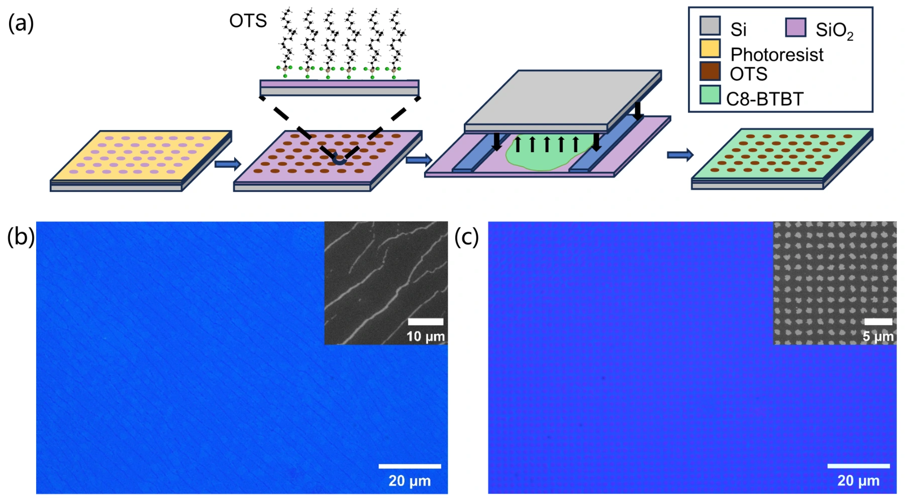
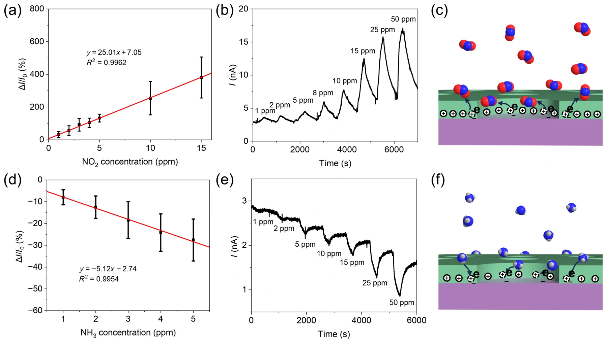

多孔有机单晶：兼顾电荷输运与气体接触
用 OTS 点阵预先定义孔的位置
光刻先在 SiO₂ 表面形成规则图形，再通过 OTS 修饰得到疏水点阵。微间距升华过程中，具有液晶特征的 C8-BTBT 分子在基底上扩展并形成大面积单晶膜；冷却收缩时，疏水点阵优先释放热应力，于是孔洞在预设位置产生，而不是随机开裂。改变点阵尺寸和间距即可调节孔径及孔密度。

增加气体入口，同时保留单晶电荷通道
传统多晶有机膜虽容易形成多孔结构，但晶界和缺陷会散射载流子并造成响应漂移。本工作中的孔洞穿过连续单晶薄膜，使气体能够从孔壁和沟道内部更快接近活性区域，而电荷仍可沿低缺陷的 C8-BTBT 晶格输运。论文比较表明，多孔结构没有牺牲单晶薄膜原有的电输运优势。
孔密度同时调节灵敏度与响应速度
将多孔单晶作为底栅顶接触 OFET 的有源层后，孔洞显著增加气体扩散和吸附通道。对 NO₂ 的测试覆盖 1–15 ppm，灵敏度为 25.01 %·ppm⁻¹，计算检测限达到 2.14 ppb；相较非多孔单晶，响应与恢复更快。孔过少时接触面积不足，孔过密则会压缩有效导电通道，因此需要在气体接触和载流子输运之间取得平衡。

氧化性与还原性气体产生相反电流变化
C8-BTBT 为典型 p 型有机半导体。NO₂ 具有电子受体特征，吸附后增强沟道空穴浓度，使漏极电流增加；NH₃ 为电子给体，会补偿空穴并使电流降低。多孔单晶通过扩大可接近表面积放大这种电荷转移，同时规则孔道缩短吸附和脱附路径，因此能够兼顾高灵敏度、快响应与可重复读出。
论文来源
Fabrication and application of porous organic single-crystal films in highly sensitive gas sensors
Zhangjin Chen, Suhui Wang, Mingke Yu, Peng Li, Xu Zhang, Hong Wang, Tengxiao Guo, Chuan Liu
Nano Research 18 (2025), 94907299
DOI：10.26599/NR.2025.94907299